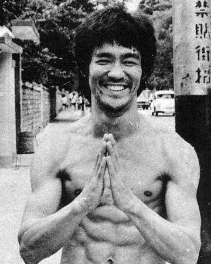

Martial Arts Legends
Ip man was a high-level Wing Chun and Wushu expert. Also known for being Grandmaster William Cheung's and Bruce Lee's teacher.

The "father of mixed martial arts", Bruce Lee was known for his Jeet Kune Do style and becoming the most influential martial artist of all time.
Jigoro Kano was a jujitsu expert that melded jujitsu styles into a form that eventually became known as "judo".

Gichin Funakoshi died holding the highest rank in karate one could obtain at the time. He formed the most widely practiced karate style used today, Shotokan.